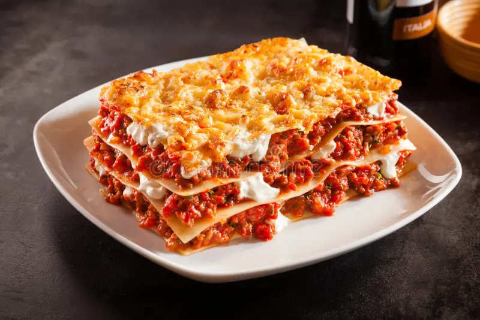

Lasagna is one of the oldest and most beloved types of pasta, tracing its origins back to Italy, specifically the region of Emilia-Romagna. Traditional lasagna alla bolognese consists of wide, flat pasta sheets layered with a rich ragù (meat sauce), creamy béchamel, and Parmigiano-Reggiano cheese. While the Southern Italian version, lasagna di Carnevale, often features ricotta, mozzarella, and various meats like sausage or meatballs, the core concept remains the same: a comforting, baked "pasta al forno" that serves as a centerpiece for family gatherings and festive meals.
The architectural beauty of a lasagna lies in its versatility and the way the flavors meld during the slow-baking process. Beyond the classic meat-based versions, modern variations include vegetarian options with spinach and mushrooms, or even seafood-centric recipes. The key to a perfect lasagna is the balance of textures—the tender pasta, the savory depth of the sauce, and the golden, crispy edges of cheese that form on the top layer. Because it can be prepared in advance and easily feeds a crowd, it has become a global staple of comfort food.